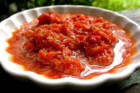
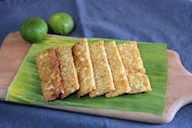
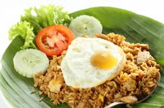
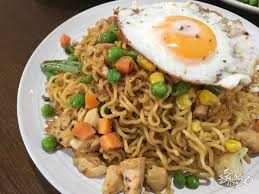
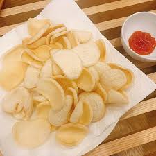

크고 작은 섬들로 이루어져 지역적 다양성이 큽니다.
쌀을 주식으로 하며 탕의 문화가 발달되지 않았습니다
음식 형태가 대부분 마른 고형식을 되어 있습니다.
인도네시아 사람들은 평평한 모양의 식기를 사용합니다.
인도네시아에서 거의 모든 요리에 사용되는 기본 양념이자 반찬입니다. 고추, 마늘, 샬롯, 소금과 향신료를 갈아서 만듭니다. 우리나라의 고추장과 비슷한 음식입니다.
인도네시아의 대표적 발효식품으로 콩을 발효시켜 만듭니다. 발효시킨 대두를 얇게 썰어 튀긴 후 밥반찬 혹은 과자로 먹습니다
나시는 인도네시아의 볶음밥입니다 나시(nasi)는 '밥', 고랭(goreng)은 '볶는다'를 의미합니다 미고랭은 인도네시아식 볶음 국수입니다 일반 국수와 달리 노란 색의 달걀국수인 미를 사용하는 것이 특징입니다.
 다양한 재료와 카사바 전분, 쌀 등을 이용한 음식입니다 반죽을 만들어 찌거나 삶은 후 얇게 썰어 건조시키고 튀겨 먹습니다.
